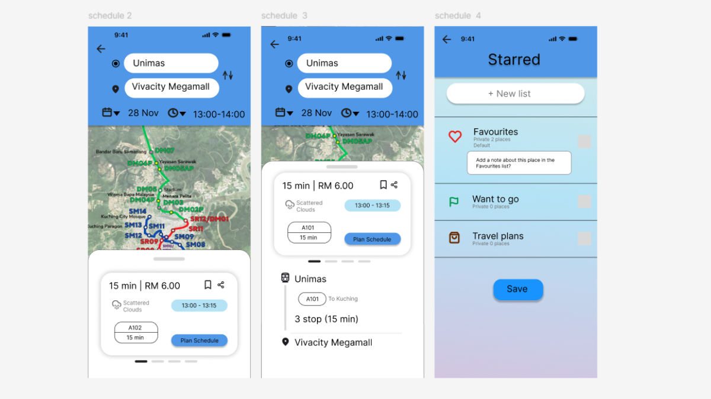

ART App Usability Evaluation
Evaluating the Usability of the ART Mobile App Prototype in Kuching, Sarawak
A usability evaluation project conducted on the Aster mobile application prototype for the Autonomous Rapid Transit (ART) system in Kuching, Sarawak. The project focused on assessing the usability, navigation and overall user experience through user testing and the System Usability Scale (SUS).

Project Overview
This project involved evaluating the usability of the Aster mobile application prototype, which was designed for the Autonomous Rapid Transit (ART) system in Kuching, Sarawak. The evaluation aimed to understand how users interacted with the prototype and identify areas that could be improved.
Evaluation Objectives
- Evaluate the usability of the ART mobile application prototype.
- Assess the clarity of the interface and navigation structure.
- Identify usability issues through user testing.
- Measure overall user satisfaction using the System Usability Scale (SUS).
- Suggest improvements to enhance the user experience.
Evaluation Methodology
The project used two usability evaluation methods to gather feedback and assess the overall user experience.
Think-Aloud Testing
Seven participants took part in Think-Aloud Testing. Participants performed selected tasks while expressing their thoughts and experiences during the interaction.
System Usability Scale (SUS)
Ten participants completed the SUS questionnaire to evaluate their perceived usability of the application prototype.
The evaluation tasks covered destination searching, schedule checking, ticket purchasing, route and map navigation, user profiles and e-wallet features.
Evaluation Results
The application prototype achieved an average System Usability Scale (SUS) score of:
80.75 / 100
The evaluation also identified several areas for improvement, including:
- Improving the visibility of the e-wallet top-up feature.
- Adjusting text sizes for better readability.
- Reducing information density in certain layouts.
- Adding more useful content to the home screen.
These findings provided useful insights into the prototype's usability and areas that could be refined to improve the overall user experience.
My Contributions
Role: Wireframe & UI/UX Designer
I played an active role in designing the ART mobile application, contributing to both the initial wireframes and the high-fidelity prototype. My contributions included:
- Design of low-fidelity wireframe screens using Figma.
- Planning and organising application layouts and screen structures based on HCI principles.
- Collaborating with another team member to design multiple high-fidelity prototype screens in Figma.
- Designing and refining user interface elements, including buttons, icons, navigation components and screen layouts.
- Contributing to the design of key application features, including destination search, route information, ticket booking, payment and user account interfaces.
- Improving visual consistency, usability and navigation across the application prototype.
Through this project, I gained practical experience in wireframing, high-fidelity UI design, interactive prototyping and usability evaluation.